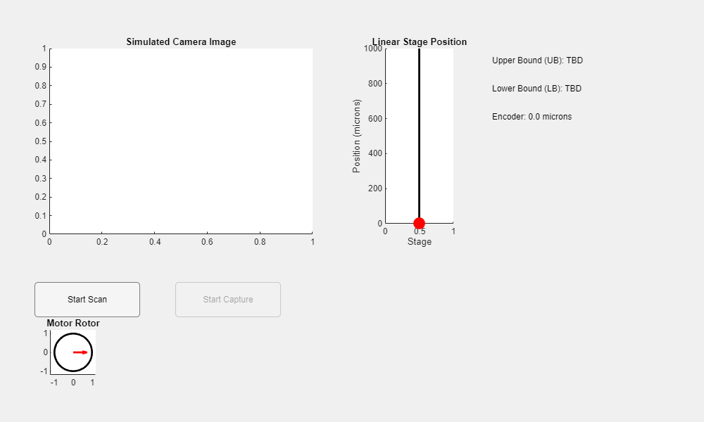

Contents
function motorCameraSimulation
Global Variables (for timers and rotor animation)
global scanTimer captureTimer rotorAngle
scanTimer = [];
captureTimer = [];
rotorAngle = 0;
Create GUI
fig = uifigure('Name','Motor-Camera System Simulation','Position',[100,100,1000,600]);
axImage = uiaxes(fig, 'Position',[50,250,400,300]);
title(axImage, 'Simulated Camera Image');
axStage = uiaxes(fig, 'Position',[500,250,150,300]);
title(axStage, 'Linear Stage Position');
xlabel(axStage, 'Stage');
ylabel(axStage, 'Position (microns)');
axStage.XLim = [0 1];
axStage.YLim = [0 1000];
hold(axStage, 'on');
plot(axStage, [0.5 0.5], [0 1000], 'k-', 'LineWidth',2);
stageMarker = plot(axStage, 0.5, 0, 'ro', 'MarkerSize',12, 'MarkerFaceColor','r');
axRotor = uiaxes(fig, 'Position',[50,50,100,100]);
axis(axRotor, 'equal');
axRotor.XLim = [-1.2 1.2];
axRotor.YLim = [-1.2 1.2];
title(axRotor, 'Motor Rotor');
hold(axRotor, 'on');
theta = linspace(0,2*pi,100);
x_circle = cos(theta);
y_circle = sin(theta);
plot(axRotor, x_circle, y_circle, 'k-', 'LineWidth',2);
rotorMarker = quiver(axRotor, 0, 0, 0.8, 0, 'r','LineWidth',2, 'MaxHeadSize',2);
lblUB = uilabel(fig, 'Position',[700,500,250,30], 'Text','Upper Bound (UB): TBD');
lblLB = uilabel(fig, 'Position',[700,460,250,30], 'Text','Lower Bound (LB): TBD');
lblEncoder = uilabel(fig, 'Position',[700,420,250,30], 'Text','Encoder: 0.0 microns');
btnScan = uibutton(fig, 'push', 'Text','Start Scan',...
'Position',[50,150,150,50], 'ButtonPushedFcn', @(~,~) startScan());
btnCapture = uibutton(fig, 'push', 'Text','Start Capture',...
'Position',[250,150,150,50], 'Enable','off', 'ButtonPushedFcn', @(~,~) startCapture());

Simulation Parameters
stagePositions = 0:10:1000;
numPos = numel(stagePositions);
focusMetricFun = @(z) exp(-((z-400)/100).^2)*100;
Build Focus FIS (FocusFIS)
fis = mamfis('Name','FocusFIS');
fis = addInput(fis, [0 100], 'Name', 'FocusMetric');
fis = addMF(fis, 'FocusMetric', 'trimf', [0 0 50], 'Name', 'NotFocused');
fis = addMF(fis, 'FocusMetric', 'trimf', [30 100 100], 'Name', 'Focused');
fis = addOutput(fis, [0 1], 'Name', 'FocusDegree');
fis = addMF(fis, 'FocusDegree', 'trimf', [0 0 0.5], 'Name', 'NotFocus');
fis = addMF(fis, 'FocusDegree', 'trimf', [0.5 1 1], 'Name', 'Focus');
ruleList = "FocusMetric==Focused => FocusDegree=Focus";
fis = addRule(fis, ruleList);
focusThreshold = 0.5;
Build Motor Regulation FIS (MotorFIS)
motorFIS = mamfis('Name','MotorFIS');
motorFIS = addInput(motorFIS, [-2 2], 'Name', 'Error');
motorFIS = addMF(motorFIS, 'Error', 'trimf', [-2 -2 0], 'Name', 'Negative');
motorFIS = addMF(motorFIS, 'Error', 'trimf', [-1 0 1], 'Name', 'Zero');
motorFIS = addMF(motorFIS, 'Error', 'trimf', [0 2 2], 'Name', 'Positive');
motorFIS = addOutput(motorFIS, [-2 2], 'Name', 'Adjustment');
motorFIS = addMF(motorFIS, 'Adjustment', 'trimf', [-2 -2 0], 'Name', 'Increase');
motorFIS = addMF(motorFIS, 'Adjustment', 'trimf', [-0.5 0 0.5], 'Name', 'NoChange');
motorFIS = addMF(motorFIS, 'Adjustment', 'trimf', [0 2 2], 'Name', 'Decrease');
ruleListMotor = [1 1 1 1; 2 2 1 1; 3 3 1 1];
motorFIS = addRule(motorFIS, ruleListMotor);
Variables for storing scan results
focusValues = zeros(1, numPos);
fuzzyOut = zeros(1, numPos);
UB = NaN; LB = NaN;
currentScanIndex = 1;
currentCaptureIndex = 1;
rotorAngle = 0;
Timer Objects for Simulation Phases
if isempty(scanTimer) || ~isvalid(scanTimer)
scanTimer = timer('ExecutionMode', 'fixedRate', 'Period', 0.2, 'TimerFcn', @scanStep);
end
if isempty(captureTimer) || ~isvalid(captureTimer)
captureTimer = timer('ExecutionMode','fixedRate', 'Period', 0.5, 'TimerFcn', @captureStep);
end
Scanning Phase Function
function scanStep(~,~)
if currentScanIndex <= numPos
z = stagePositions(currentScanIndex);
focusVal = focusMetricFun(z);
focusValues(currentScanIndex) = focusVal;
fuzzyVal = evalfis(fis, focusVal);
fuzzyOut(currentScanIndex) = fuzzyVal;
img = uint8(ones(300,400)*focusVal);
imshow(img, 'Parent', axImage);
title(axImage, sprintf('Scan: Z = %d microns, Focus = %.1f', z, focusVal));
lblEncoder.Text = sprintf('Encoder: %d microns', z);
stageMarker.YData = z;
currentScanIndex = currentScanIndex + 1;
else
idxInFocus = find(fuzzyOut > focusThreshold);
if ~isempty(idxInFocus)
UB = stagePositions(idxInFocus(1));
LB = stagePositions(idxInFocus(end));
end
lblUB.Text = sprintf('Upper Bound (UB): %.1f microns', UB);
lblLB.Text = sprintf('Lower Bound (LB): %.1f microns', LB);
stop(scanTimer);
if ~isnan(UB) && ~isnan(LB)
btnCapture.Enable = 'on';
else
uialert(fig, 'No in-focus region detected during scan!', 'Scan Error');
end
end
end
Capture Phase Function: With Motor Regulation and Rotor Animation
function captureStep(~,~)
if currentCaptureIndex == 1
[~, idx] = min(abs(stagePositions - UB));
currentCaptureIndex = idx;
end
if currentCaptureIndex < numPos && stagePositions(currentCaptureIndex) < LB
commandedStep = 10;
commandedPos = stagePositions(currentCaptureIndex);
randomError = -2 + 4*rand();
actualPos = commandedPos + commandedStep + randomError;
errorVal = (actualPos - commandedPos) - commandedStep;
adjustment = evalfis(motorFIS, errorVal);
adjustedStep = commandedStep + adjustment;
commandedPosNext = commandedPos + adjustedStep;
lblEncoder.Text = sprintf('Encoder: %.1f microns (Error: %.2f, Adj: %.2f)', actualPos, errorVal, adjustment);
stageMarker.YData = actualPos;
focusVal = focusMetricFun(actualPos);
img = uint8(ones(300,400)*focusVal);
imshow(img, 'Parent', axImage);
title(axImage, sprintf('Capture: Z = %.1f microns, Focus = %.1f', actualPos, focusVal));
rotorAngle = rotorAngle + (5*pi/180);
set(rotorMarker, 'UData', 0.8*cos(rotorAngle), 'VData', 0.8*sin(rotorAngle));
[~, nextIdx] = min(abs(stagePositions - commandedPosNext));
currentCaptureIndex = nextIdx;
else
stop(captureTimer);
uialert(fig, 'Capture phase complete!', 'Done');
displayAndSaveFIS(fis, motorFIS);
end
end
Button Callback: Start Scan
function startScan()
currentScanIndex = 1;
focusValues = zeros(1, numPos);
fuzzyOut = zeros(1, numPos);
start(scanTimer);
btnScan.Enable = 'off';
end
Button Callback: Start Capture
function startCapture()
currentCaptureIndex = 1;
start(captureTimer);
btnCapture.Enable = 'off';
end
end
Helper Function to Display and Save FIS Membership Functions and Rules
function displayAndSaveFIS(fis, motorFIS)
figFocus = figure('Name','FocusFIS Membership Functions');
subplot(2,1,1);
plotmf(fis, 'input', 1);
title('FocusFIS - Input: FocusMetric');
subplot(2,1,2);
plotmf(fis, 'output', 1);
title('FocusFIS - Output: FocusDegree');
saveas(figFocus, fullfile(pwd, 'visualizations/FocusFIS_MF.png'));
disp('FocusFIS Rules:');
disp(fis.Rules);
figMotor = figure('Name','MotorFIS Membership Functions');
subplot(2,1,1);
plotmf(motorFIS, 'input', 1);
title('MotorFIS - Input: Error');
subplot(2,1,2);
plotmf(motorFIS, 'output', 1);
title('MotorFIS - Output: Adjustment');
saveas(figMotor, fullfile(pwd, 'visualizations/MotorFIS_MF.png'));
disp('MotorFIS Rules:');
disp(motorFIS.Rules);
end